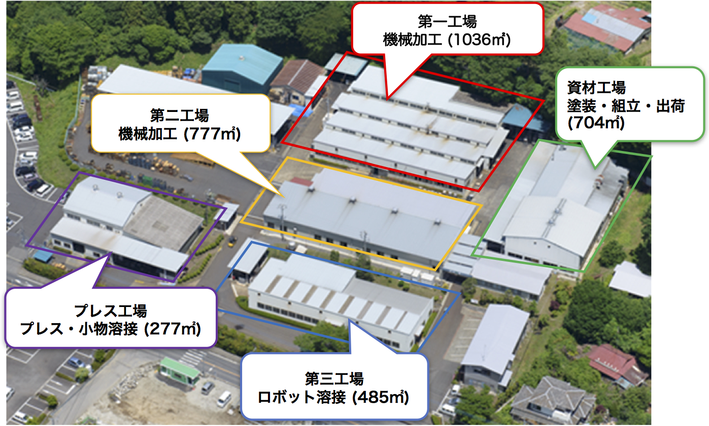

矢板工場

生産設備
| カテゴリ | 種別 | 台数 | メーカー・その他情報 | |
|---|---|---|---|---|
| NC加工装置 | 横型MC BT50 | □630 | 9 | 三菱重工、他 |
| NC加工装置 | 横型MC BT50 | □500 | 9 | マキノフライス、他 |
| NC加工装置 | 立型MC BT50 | 1700 x 620 | 4 | 森精機、他 |
| NC加工装置 | 立型MC BT40 | 920ｘ520 | 6 | 東芝機械、他 |
| NC加工装置 | 立型NC旋盤 | φ800 | 2 | オークマ 2SPタイプ |
| NC加工装置 | 立型NCフライス | 2 | 遠州 | |
| NC加工装置 | 横型NCフライス | 1 | OKK | |
| NC加工装置 | NCロータリ研削盤 | φ600 | 1 | 住友重機 SVR60 |
| NC加工装置 | NCレシプロ研削盤 | 500 × 150 | 1 | 黒田精工 |
| 溶接ロボット | 350A | 1598 x 1238 | 1 | |
| 溶接ロボット | 350A ポジショナー付き | 1598 x 1238 | 2 | パナソニック |
| 溶接ロボット | 500A ポジショナー付き | 1598 x 1238 | 4 | パナソニック、他 |
| その他 | 半自動溶接機 | 21 | 250A～500A、パナソニック他 | |
| その他 | 油圧プレス | 2 | 20t、50t | |
| その他 | ボンチングプレス | 3 | 15t、35t、110t | |
| その他 | 油圧ベンダープレス | 1 | 60t | |
| その他 | 汎用フライス盤 | 4 | ||
| その他 | 汎用旋盤 | 1 | 6尺 5HP | |
| その他 | ブローチ盤 | 1 | 3t | |
| その他 | ショットブラスト | 3 | ||
| その他 | 塗装ブース | 2 | ||
| その他 | 部品洗浄機 | 2 | ||
| その他 | 磁気探傷機 | 1 | ||
| その他 | 超音波探傷機 | 1 | ||
| その他 | 三次元測定器 | 900 × 1000 × 800 | 1 | ミツトヨ |
| その他 | 形状測定器 | 1 | 東京計器 |